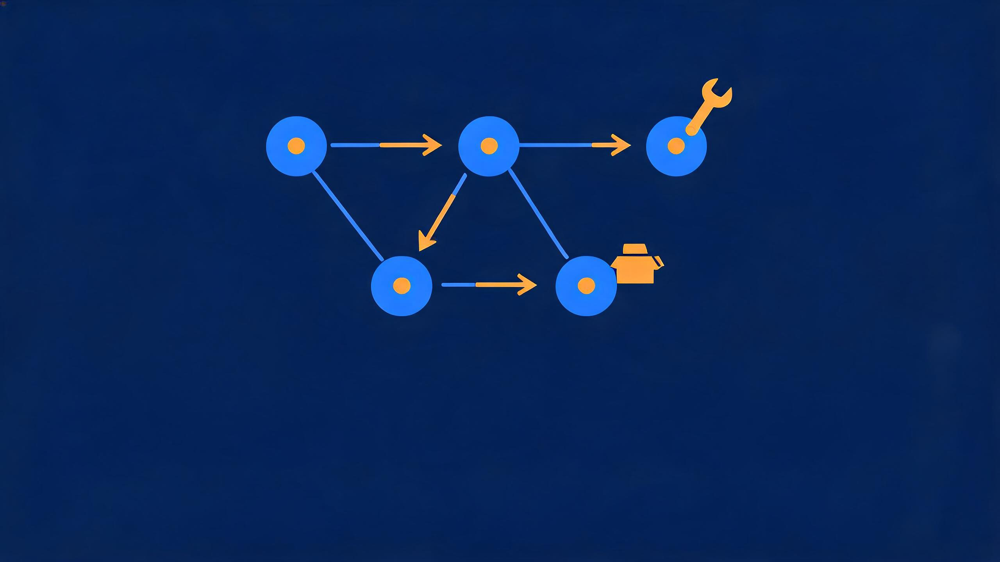
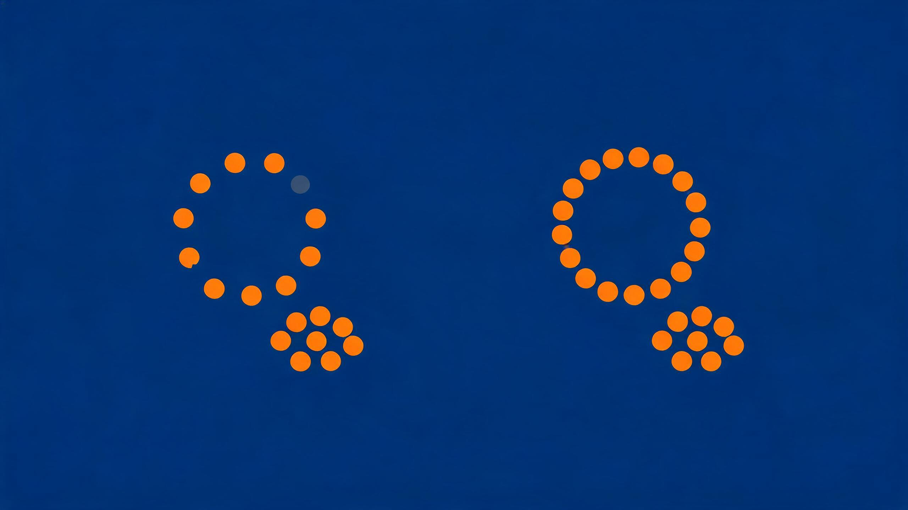
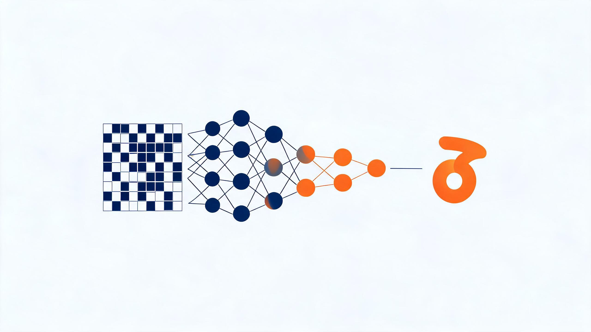
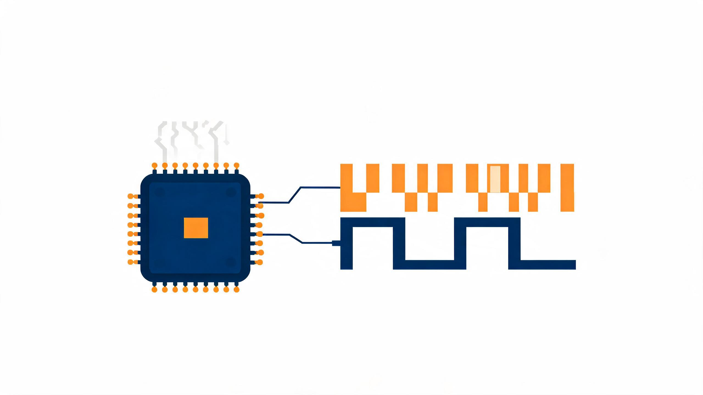

主投后端开发，同时覆盖算法/机器学习、前端/全栈、计算机视觉、NLP、数据挖掘与大模型应用。 具备从 Web 全栈到深度学习、从大模型检索增强（RAG）到端侧/数字电路的完整工程履历， 用数据说话、以项目证明。
以 Python 为轴、全栈与深度学习双线并进，长期用 AI 辅助开发提效； 项目均走通「数据 → 模型/系统 → 部署 → 量化评估」完整闭环，可直接对标工业级追问。
对标工业级的检索增强生成系统，走通「解析 → 父子分块 → 混合检索 → 重排 → 带引用生成 → 流式服务」完整链路。

LangGraph 编排的客服多智能体系统：意图路由 → 工具调用（Function Calling）→ 生成回答，复用深度 RAG 基础设施，核心链路已通、业务工具迭代中。
输入功能需求，DeepSeek 自动生成覆盖功能 / 边界 / 异常 / 性能四类场景的结构化测试用例，支持导出 Markdown / JSON。
纹样数字化展示与检索平台，含分类、时间线、搜索、设计素材、社区问答五大模块，完整的全栈 Web 项目。

基于 SimCLR / NT-Xent 与视图掩码的多视图聚类系统，研究缺失视图下的鲁棒聚类与表示学习。
用 CLIP 把图像和文本映射到统一语义空间，融合 + 聚类自动发现语义类别，再由 GPT / TF-IDF 生成可读概念标签。
基于 UNSW-NB15 数据集的网络流量恶意行为二分类检测，含特征工程、模型训练、Web 部署的完整 ML 流水线。
批量采集 30 款网页游戏并自动化打包为可离线运行的交付包，覆盖多来源抓取、去重与体积优化。
React + Vite + TypeScript 构建的 AI 应用前端，组件化开发与工程化配置。

MLP 实现 MNIST 手写数字识别，含手动实现反向传播以深入理解梯度，混淆矩阵评估。

100 分频电路，500Hz 分频为 5Hz / 1Hz 多档，含频率选择逻辑与 RTL 时序仿真。